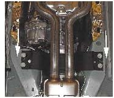
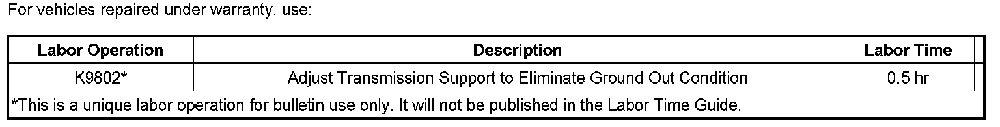

A/T - Rumbling Noise on Acceleration
TECHNICALBulletin No.: 07-07-30-029B
Date: April 23, 2008
Subject:
Rumble Type Noise on Acceleration (Adjust Transmission Support)
Models:
2004-2008 Cadillac SRX
2005-2008 Cadillac STS
2008 Cadillac CTS
with All Wheel Drive (RPO MX7)
Supercede:
This bulletin is being revised to update the correction information. Please discard Corporate Bulletin Number 07-07-30-029A (Section 07 - Transmission/Transaxle).
Condition
Some customers may comment on a rumble type noise heard on acceleration.
Cause

This noise may be due to a ground out condition between the transmission support and the mount.
Correction
Adjust the transmission support to eliminate the ground out condition using the procedure below.
1. Loosen the four transmission support to body bolts.
2. Loosen the two mount to transfer case bolts.
3. Position the transmission support so that it is parallel to the body.
4. Re‐torque the two mount to transfer case bolts. Tighten the passenger side mount to transfer case bolt first, then the driver side
Tighten
Tighten the bolts to 110 Nm (81 lb-ft)

5. Shift the transmission support as far rearward as possible.
6. Re-torque the four transmission support to body bolts.
Tighten
Tighten the bolts to 60 N.m (44 lb-ft).
Warranty Information

For vehicles repaired under warranty, use the table.

Disclaimer